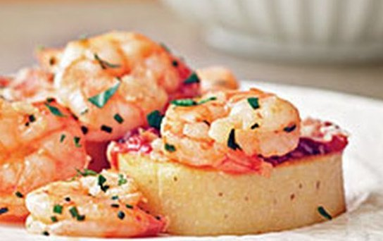

Beef Brasato with Pappardelle and Mint
- 2 3/4 pounds trimmed boneless beef shank, cut into 2-inch pieces
- One 750-milliliter bottle dry red wine
- 15 mint sprigs, stems reserved
- Salt and freshly ground pepper
- 1/4 cup extra-virgin olive oil
- One 35-ounce can peeled Italian tomatoes, crushed
- 1 pound fresh pappardelle
- 4 large garlic cloves, thinly sliced
- Freshly grated Parmigiano-Reggiano cheese, for serving
Balsamic-and-Rosemary-Marinated Florentine Steak
- 1 c. balsamic vinegar
- ½ c. extra-virgin olive oil
- 2 tbsp. extra-virgin olive oil
- ¼ c. finely chopped rosemary
- 3 lb. porterhouse steak
- 2 tsp. kosher salt
- 2 tsp. coarsely ground pepper
Lemon Pepper Shrimp Scampi
- 1/3 cup olive oil
- 1 tablespoon minced garlic
- 1 pound large shrimp, peeled and deveined
- 1 tablespoon McCormick® Perfect Pinch® Lemon & Pepper Seasoning
- 1 teaspoon McCormick® Parsley Flakes
Filet Mignon with Arugula Salad
- 4 beef tenderloin steaks, trimmed 1/2
- teaspoon salt, divided 1/4
- teaspoon black pepper, divided 2
- teaspoons butter
- 1/2 cup prechopped red onion
- 1 (8-ounce) package presliced cremini mushrooms
- 2 tablespoons fresh lemon juice
- 1 (5-ounce) bag baby arugula

Smoky Shrimp and Parmesan-Polenta Cakes
- 1 Tbs. olive oil
- 1 lb. peeled and deveined medium shrimp
- 1/4 C. dry white wine
- 1 Tbs. chopped fresh chives
- 1 Tbs. fresh lemon juice
- 1/4 tsp. Spanish smoked paprika
- 1 17-oz. tube polenta, cut into 8 1/2-inch slices
- 8 tsp. marinara sauce
- 8 tsp. grated fresh Parmesan cheese
- 1 Tbs. chopped fresh flat-leaf parsley
Flounder Piccata with Spinach
- 1 (3 1/2 ounce) bagboil-in-bag long-grain rice
- 1⁄2 teaspoon salt, divided
- 1⁄4 teaspoon black pepper, divided
- 4 (6 ounce) flounder fillets
- 2 tablespoons all-purpose flour
- 2 teaspoons olive oil
- 1⁄3 cup dry white wine
- 2 tablespoons fresh lemon juice
- 1 tablespoon drained capers, chopped
- 2 tablespoons butter
- 4 cups fresh Baby Spinach
Veal Marsala
- 8 veal cutlets (about 3 ounces each)
- Salt and freshly ground black pepper
- 2 to 3 tablespoons unsalted butter
- 2 to 4 tablespoons olive oil
- 1 large shallot, finely chopped
- 2 to 4 garlic cloves, smashed
- 2 ounces assorted mushrooms, sliced
- 1/2 cup sweet Marsala
- 3/4 cup low-salt chicken broth
- Leaves from 1 fresh rosemary sprig
Pesto Caesar Salad
- 1 tbsp olive oil
- 1 pack Romaine lettuce hearts
- 1 pack sweet gem lettuce, washed and shredded
- 220g cherry tomatoes, halved
- 50g pine nuts, lightly toasted
- 100g black pitted olives, cut in half
- 3 slices of your choice of bread
- 3 tbsp olive oil
- 130g fresh pesto
- 1 lemon, 1/2 finely zested and juiced
Turkey Piccata
- 1/4 cup all-purpose flour
- 1/2 teaspoon salt
- 1/4 teaspoon pepper
- 1 package turkey breast cutlets
- 2 tablespoons olive oil
- 1/2 cup chicken broth
- 3 tablespoons butter
- 1 tablespoon lemon juice
- 1 tablespoon minced fresh parsley
- 1 tablespoon capers, drained
Grilled Tuna and Broccolini with Garlic Drizzle
- extra-virgin olive oil
- 2 tablespoons
- minced fresh garlic
- canned anchovy fillets in oil, drained and chopped
- freshly ground black pepper, divided
- (6-ounce) tuna steaks
- kosher salt